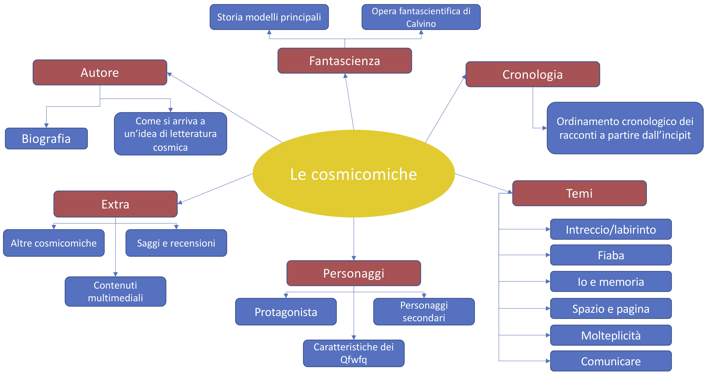

Quello che vi trovate davanti è un sito didattico per conoscere Italo Calvino attraverso la sua opera Le cosmicomiche, e più in generale il suo filone scientifico. Qui potrete trovare alcune nozioni biografiche sull’autore e una breve storia della fantascienza per inquadrare Italo Calvino. Poi entriamo all’interno delle Cosmicomiche giocando con l’ordinamento dei fatti raccontati e conoscendo meglio lo strano personaggio protagonista delle vicende. Le Cosmicomiche vi saranno utili anche per conoscere alcuni dei temi principali che ricorrono nella produzione letteraria di Italo Calvino.
Questa è una mappa esplicativa per orientarsi all'interno del sito: in rosso potete riconoscere i titoli delle pagine, in blu le loro sezioni interne
